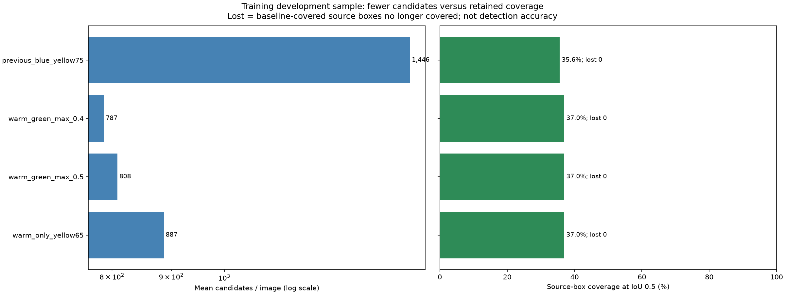
Same training images and IoU 0.90 deduplication. Green/blue are evidence only; their presence inside a box does not veto a real object with background.
| method | boxes | covered | mean_candidates |
|---|---|---|---|
| previous_blue_yellow75 | 73 | 26 | 1446.166667 |
| warm_green_max_0.4 | 73 | 27 | 787.000000 |
| warm_green_max_0.5 | 73 | 27 | 808.500000 |
| warm_only_yellow65 | 73 | 27 | 886.666667 |
| method | source_label | boxes | coverage_iou_05 |
|---|---|---|---|
| previous_blue_yellow75 | cone | 7 | 0.714286 |
| previous_blue_yellow75 | roadworks | 3 | 0.333333 |
| previous_blue_yellow75 | vertical_pannel | 63 | 0.317460 |
| warm_green_max_0.4 | cone | 7 | 0.714286 |
| warm_green_max_0.4 | roadworks | 3 | 0.666667 |
| warm_green_max_0.4 | vertical_pannel | 63 | 0.317460 |
| warm_green_max_0.5 | cone | 7 | 0.714286 |
| warm_green_max_0.5 | roadworks | 3 | 0.666667 |
| warm_green_max_0.5 | vertical_pannel | 63 | 0.317460 |
| warm_only_yellow65 | cone | 7 | 0.714286 |
| warm_only_yellow65 | roadworks | 3 | 0.666667 |
| warm_only_yellow65 | vertical_pannel | 63 | 0.317460 |
Previously covered source boxes lost: 0; newly covered: 1. Coverage is not detection accuracy. Narrowing colors may remove legitimate objects.
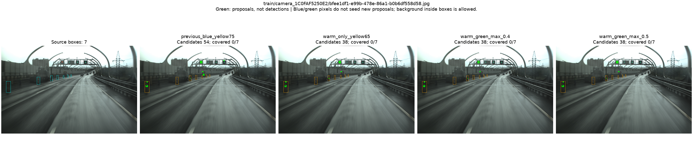
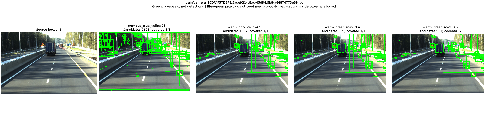
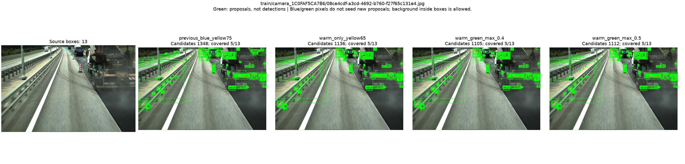
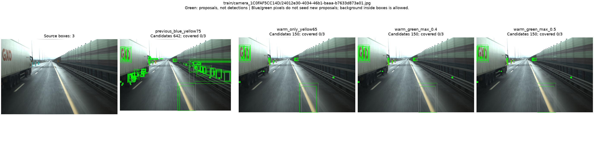
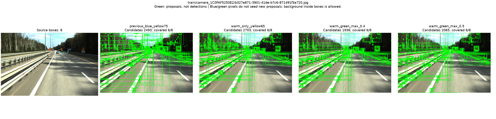
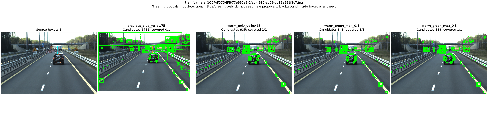
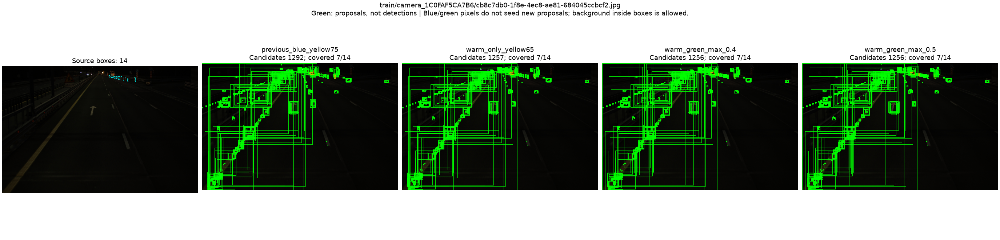
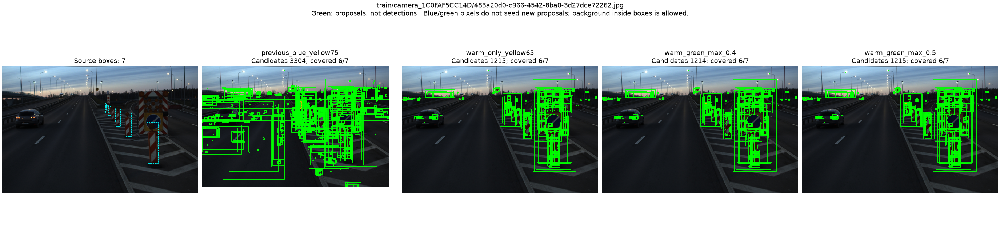
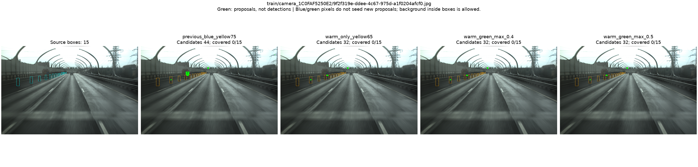
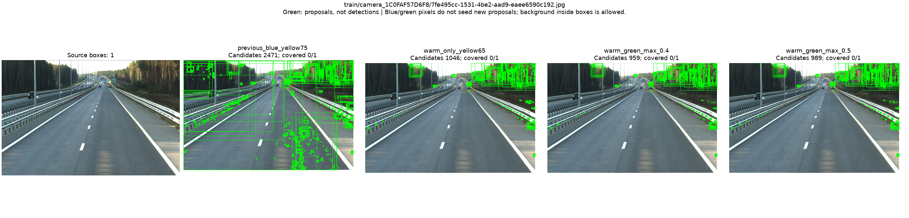
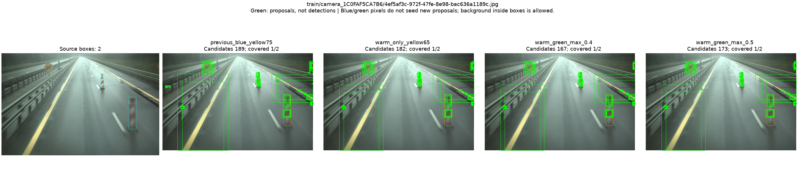
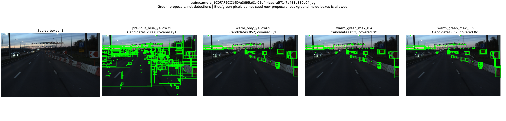